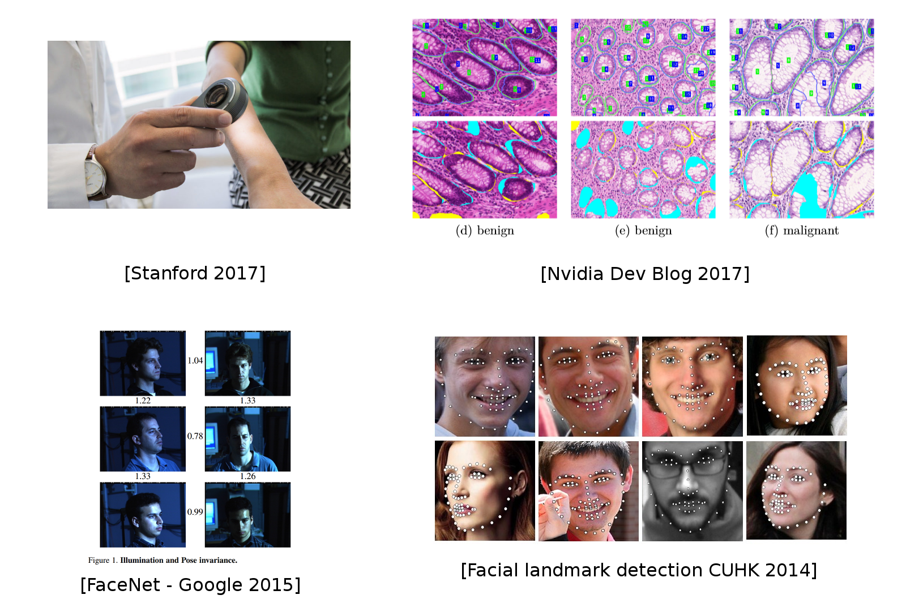
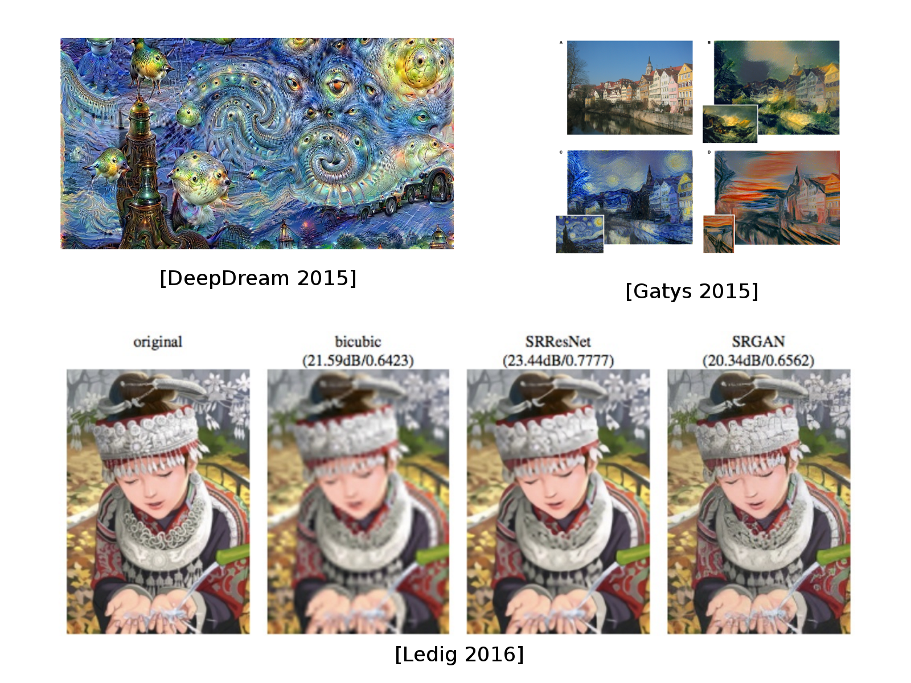
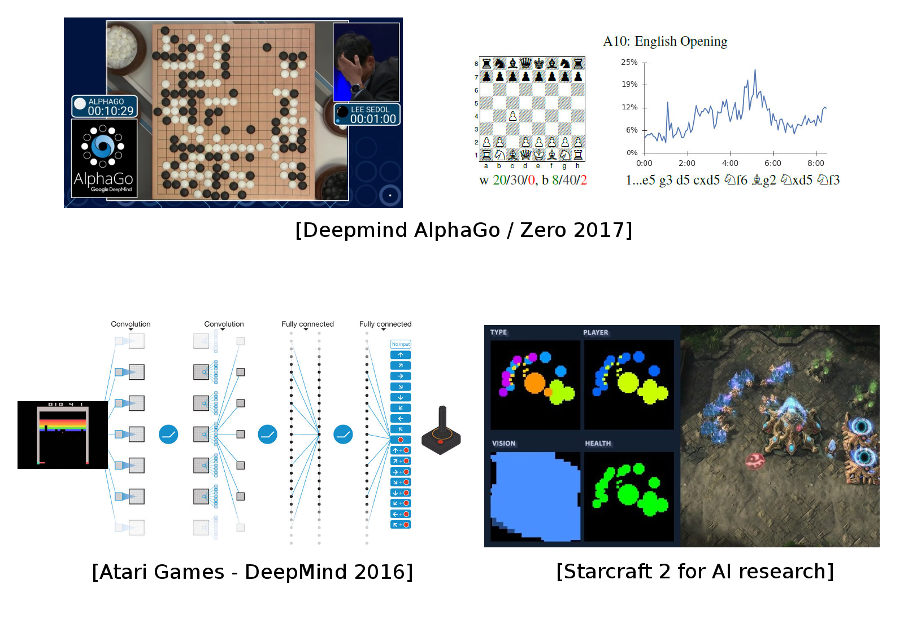

class: title-slide,right, middle # A brief intro into AI Christopher Coello, Data Scientist --- layout: true <div class="my-footer"> <!-- <span> Christopher Coello </span> //--> </div> --- # Goal of this talk - A brief history of AI - Why is it so trendy these days ? - What can we do with it ? .center[ <img src="images/ML.png" style="width: 500px;" /> ] --- # Erfaring - Ingeniør (Signal/Image Processing) - PhD innen røntgendetektor teknologi - Postdoc på Universitet i Oslo innen bildebehandling av preklinisk og klinisk hjerne PET/MR - Data Analytiker i en London basert startup innen legemidler utvikling - Data Analytiker innen FinTech (day-ahead strømmarked) hos Refinitiv (prev. Thomson Reuters/Point Carbon) <br\> .center[ <img src="images/archetypes-banner.png" style="width: 250px;" /> ] --- exclude: true # References - <a target="_blank" rel="noopener noreferrer" href="http://www-bcf.usc.edu/~gareth/ISL/book.html" > An Introduction to Statistical Learning (ISL) </a> - <a target="_blank" rel="noopener noreferrer" href="https://www.springer.com/us/book/9780387848570" > The Elements of Statistical Learning (ESL) </a> - For anybody: <a target="_blank" rel="noopener noreferrer" href="https://www.fast.ai/"> Fast.ai online courses </a> - For math geeks: <a target="_blank" rel="noopener noreferrer" href="https://m2dsupsdlclass.github.io/lectures-labs/"> Master Datascience Paris Saclay </a> --- # Terminology ### **AGI**: **A**rtificial **G**eneral **I**ntelligence ### **AI**: **A**rtifical **I**ntelligence ### **ML**: **M**achine **L**earning ### **DL**: **D**eep **L**earning ### **RL**: **R**einforcement **L**earning --- # Public opinion about AI .center[ ] --- # Public opinion about AI .center[ ] --- # AI today .center[ ] --- # Apples and oranges - Term *artifical intelligence* is not appropriate - *Machine intelligence* is more correct - Analogy: concept of flying .center[ ] --- # What is AI / ML / DL .center[ ] ### .center[DL $\subset$ ML $\subset$ AI] ??? Darmouth Workshop 1956 Minsky Holland McCarthy Shannon Perceptrons (1970), DARPA funding cuts -> 1st winter Explosion of expert systems (rule based system) in the 80s --- # Problem definition .center[ ] -- - Using a possible set of explanatory variables (**inputs**), we try to describe a **process** that generates an **output** - Use this description (**model**) in order to predict the output given a new set of explanatory variables --- # Schematic of a model .center[ <img src="images/cat_model_link_math.svg" style="width: 770px;" /> ] --- # Learning ML system .center[ <img src="images/cat_model_link_math_supervised.svg" style="width: 770px;" /> ] <br/> ### Finding model ($f$) - often called training - choosing $f$ so that $f(X)$ and $Y$ are the same as often as possible --- exclude: true # Linear Regression Models $$ f(X) = \beta\_0 + \sum\_{j=1}^{p} \beta\_jX\_j $$ Inputs ($X\_j$) can be tweaked : - log, square, square-root,... - basis expansions ($X\_2=X\_1^3$, $X\_3=X\_1 \times X\_2$ ) - dummy coding of qualitative inputs (true/false, week, month) No matter the source of the $X\_j$ , the model is linear in the parameters. --- # Predicting football supporters .center[ ] --- # Nearest Neighbour Model .center[ <img src="images/near_neigh_1.PNG" style="width: 350px;" /> ] <small>_Use this **model** in order to predict the output given a new set of explanatory variables_</small> --- # Typical ML system .center[ <img src="images/cat_model_link_math_supervised.svg" style="width: 770px;" /> ] <br/> ### Finding model ($f$) - often called training - choosing $f$ so that $f(X)$ and $Y$ are the same as often as possible **BUT NOT QUITE** --- # Near. Neigh. Model (N=15) .center[ ] --- # Deep Learning system .center[ <img src="images/image_dl_without_text.png" style="width: 700px;" /> ] <br/> -- .center[ <img src="images/ Sound_City_Setagaya_DSC_1931.jpg" style="width: 450px;"/> ] --- # Deep Learning system .center[ <img src="images/image_dl_without_text.png" style="width: 700px;" /> ] <br/> .center[ <img src="images/resnet_152.png" style="width: 250px;"/> ] .center[**Resnet-50** (#params: 1.7M)<br/> <small>_Adapted from https://arxiv.org/abs/1512.03385_</small>] --- exclude: true # Choosing an ML algorithm Explore the relevant mappings between inputs and output(s) .center[ $X \implies f(X)$ ]<br/> .center[ <img src="images/all_models.png" style="width: 400px;" /> ] --- # What is new ? .center[ ] --- # Why Deep Learning Now? - Better algorithms & understanding - .grey[Computing power (GPUs, TPUs, ...)] - .grey[Data with labels] - .grey[Open source tools and models] --- # Why Deep Learning Now? - Better algorithms & understanding - Computing power (GPUs, TPUs, ...) - .grey[Data with labels] - .grey[Open source tools and models] .center[ <img src="images/gpu_tpu.png" style="width: 450px;" /><br/><br/> <small>_GPU and TPU_</small> ] --- # Why Deep Learning Now? - Better algorithms & understanding - Computing power (GPUs, TPUs, ...) - Data with labels - .grey[Open source tools and models] .center[ <br/><br/> <small>_Adapted from Andrew Ng_</small> ] --- # Why Deep Learning Now? - Better algorithms & understanding - Computing power (GPUs, TPUs, ...) - Data with labels - Open source tools and models .center[ <br/><br/> ] --- # DL Today: Speech-to-Text .center[ <img src="images/speech.png" style="width: 780px;" /> ] --- # DL Today: Vision .center[ <img src="images/vision.png" style="width: 620px;" /> ] --- exclude: true # DL Today: Vision .center[  ] --- # DL Today: Natural Language Processing (NLP) .center[ <img src="images/nlp.png" style="width: 550px;" /> ] --- # DL Today: NLP .center[ <img src="images/nlp2.png" style="width: 720px;" /> ] -- Most of chatbots claiming "AI" do not use Deep Learning (yet?) --- # DL Today: Vision + NLP .center[ <img src="images/nlp_vision.png" style="width: 760px;" /> ] --- # DL Today: Image translation .center[  ] --- # DL Today: Generative models .center[ <img src="images/nvidia_celeb.jpg" style="width: 650px;" /> <br/>Sampled celebrities [Nvidia 2017] ] --- # DL Today: Generative models <br/> .center[ <img src="images/evolution_faces_2014_2018.jpg" style="width: 550px;" /> ] --- # DL for AI in games .center[  ] -- <small> AlphaGo/Zero: Monte Carlo Tree Search, Deep Reinforcement Learning, self-play </small> --- # What is RL **Reinforcement learning** .center[ <img src="images/Reinforcement_learning_diagram.svg" style="width: 350px;" /> ] ??? Reinforcement learning: agents are attempting to find the optimal way to accomplish a particular goal. As the agent takes action that goes toward the goal, it receives a reward. The overall aim is to predict the best next step to take to earn the biggest final reward. --- # DL for AI in games .center[<video controls><source src="images/MH8-hPvwn-in5zRe.mp4"></video>] --- class: middle, centers # Industry use case: predicting wind power production at TSO level --- # DS lifecycle .center[ <img src="images/ds_lifecycle.png" style="width: 450px;" /> ] --- # 01 - Business Understanding - Product: day-ahead prediction of wind power production .center[ ] --- # 01 - Business Understanding - Limitations : current wind model was in average too inaccurate compared to our competitors .center[ ] - Other factors: * execution time, * framework existing in your company (Java, Python, R, Matlab,...), * ease of implementation, * ease of explanation to clients, * experience of the team, etc... --- # 02 - Data Mining - Switched from using measured wind speeds to forecasted wind speeds .center[ ] --- # 03/04 - Data Exploration - Dimensionality reduction (1B point per country) .center[ ] --- # 05 - Feature engineering - Generate wind speed and direction from raw wind component - Assemble a time serie from forecasts - Generate continuous time features .center[ ] --- # 06 - Predictive modeling - First test with most algorithm with default hyperparameters (random forest, SVMr in this case) - Refine and choose one model - Refine and choose the hyperparameters of the model .center[ ] --- # Back to 02 (or 01) and refine - First draft of a model: 50h working hours - not prioritize by the management (forgot for a couple of month) - High priority given again mid november -> it took 2 persons 50% of time a month from the first draft to possible production model --- # 07 - Data Visualisation .center[ <img src="images/results_rf.png" style="width: 700px;" /> ] --- # 07 -> 01: spanish solar production .center[ ] --- # Take home message - Create a simple baseline (if you start on a new project) - Don’t underestimate the time (code) needed on gathering data / feature engineering ???Less time/recursion on the model optimisation (fun and important one) - Generalisation, generalisation, generalisation ??? Shallow models can provide an acceptable accuracy Deep learning models are often the most accurate, but not the ones we should use --- # Thanks for the attention .center[ <small>Twitter: <a target="_blank" rel="noopener noreferrer" href="https://twitter.com/ChrCoello">@ChrCoello<a/></small> ]